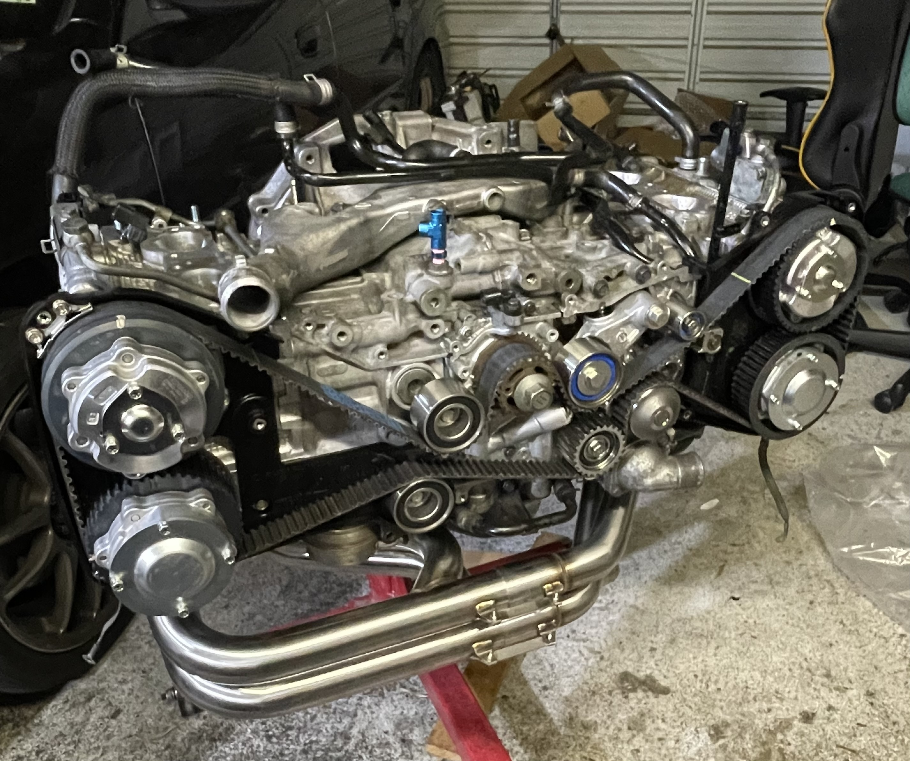
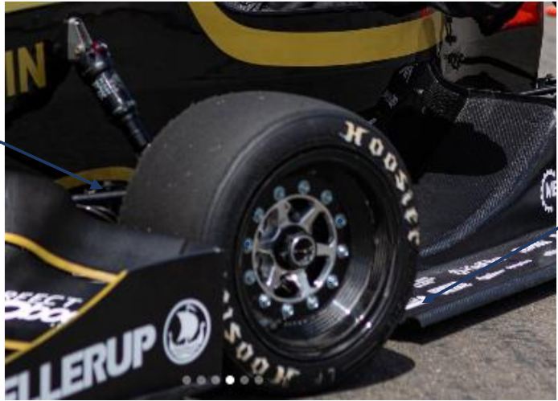
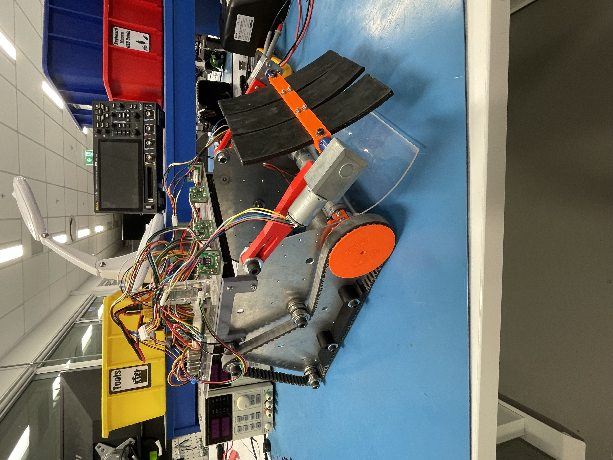

R&D / Test Engineering
Marine Snapback Research & Design
Investigated mooring snapback and designed a test-rig upgrade, now built and tested. Co-author on the resulting technical paper.

Motorsport / Automotive
Turbocharged Engine Build
Built and running, daily driven. Tune to target pending.

FSAE / Sensing
Tyre Temperature Sensor
Junior-led onboard tyre-temperature logging system for UC Motorsport (FSAE). Schematic, layout and BOM complete, hardware on order.

Mechanical Design
Line Follower Robot
Mechanical lead on a competition line-following robot. Third overall.

Automation / Mechatronics Design
Pick-and-Place CNC
Five-person build from scratch. Belt-drive work, fault diagnosis, and assembly. Built for $128.85.

Robotics / Mechanical design
RoboCup Collection Robot
Team collection robot with a rotating-drum intake I proposed. Currently in a fast-paced design, build and test loop.